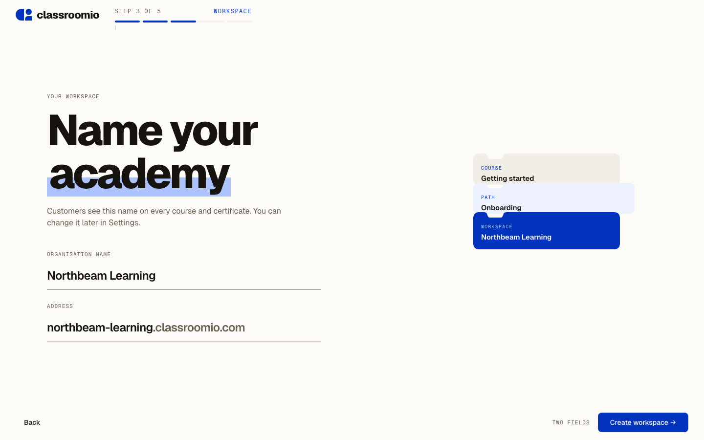
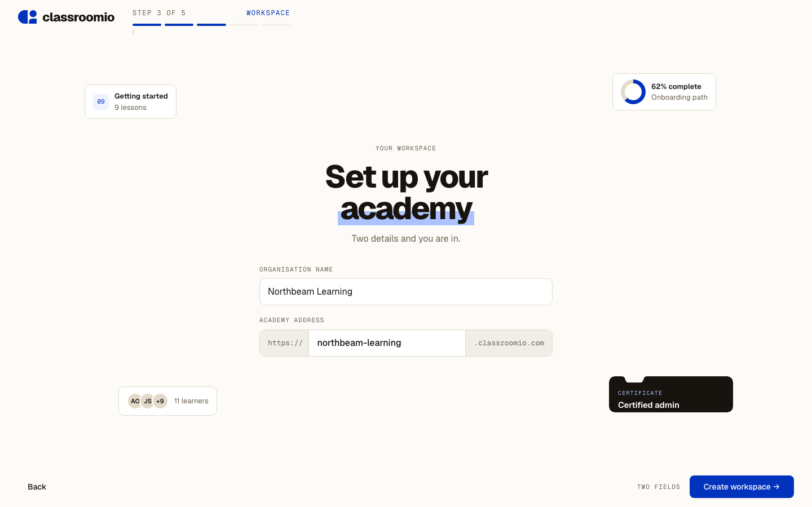
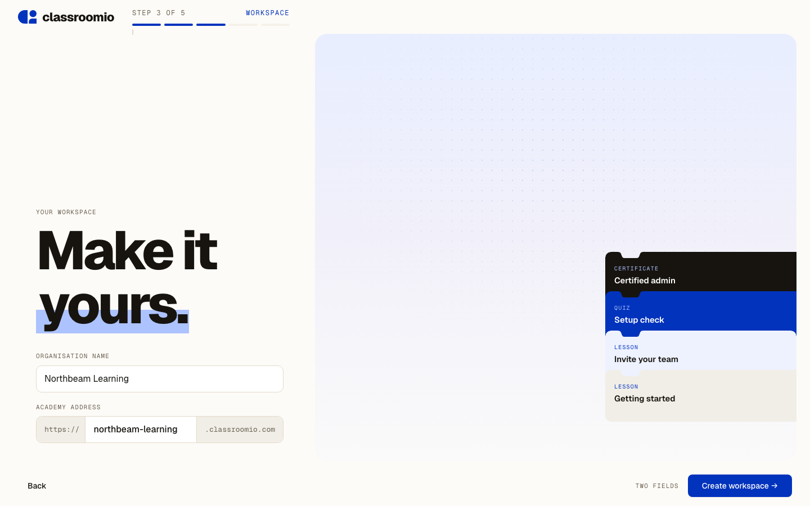
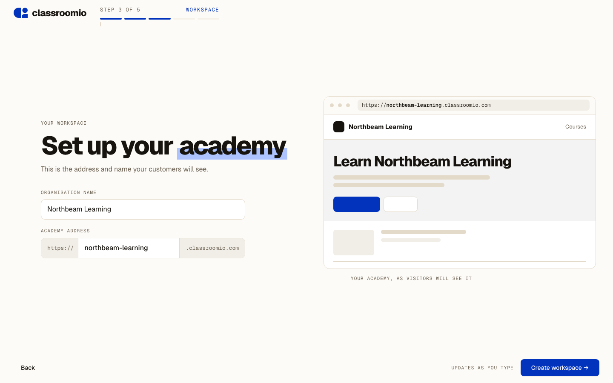
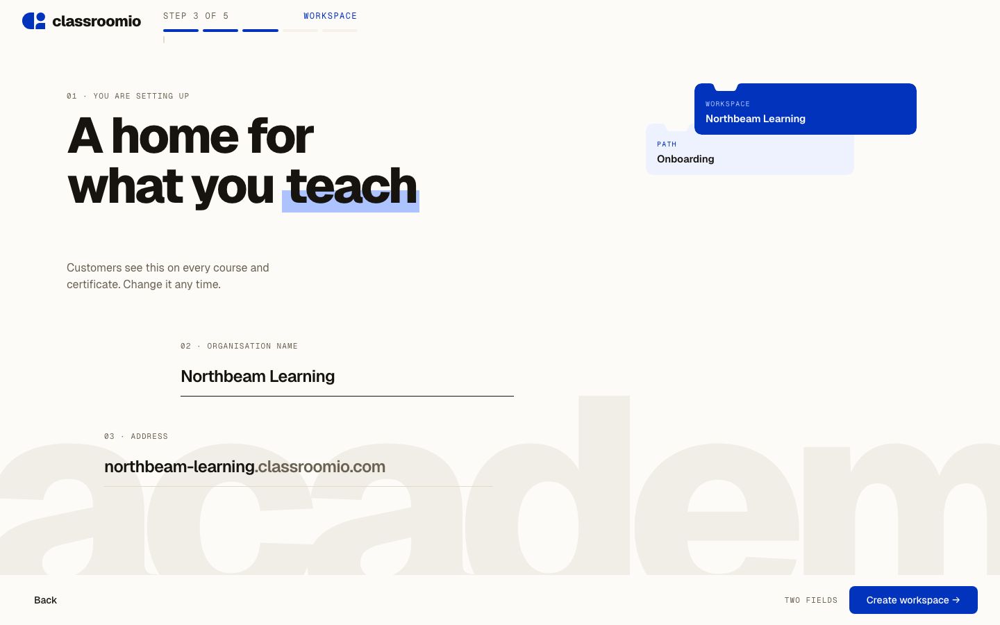

Workspace setup
The production screen asks for a full name, an organisation name and an academy address. It feels busy because a testimonial panel, an illustration, a tagline and a stepper all compete with those three fields. All five keep the same fields and validation and remove everything else. Concept 4 is the one built into the flow.

Typography-led. Underline fields, the address as live type, and one small block stack as the only image.

A centred form with four sparse fragments of course, progress, learners and a certificate around it.

The headline crosses the seam of a wash panel; the form sits low and left, blocks bleed off the right edge.

The form beside a restrained fragment of the academy: its address bar and header update as you type.

Off-grid: a ghost word, staggered fields with mono numbering and two layered blocks in the corner.